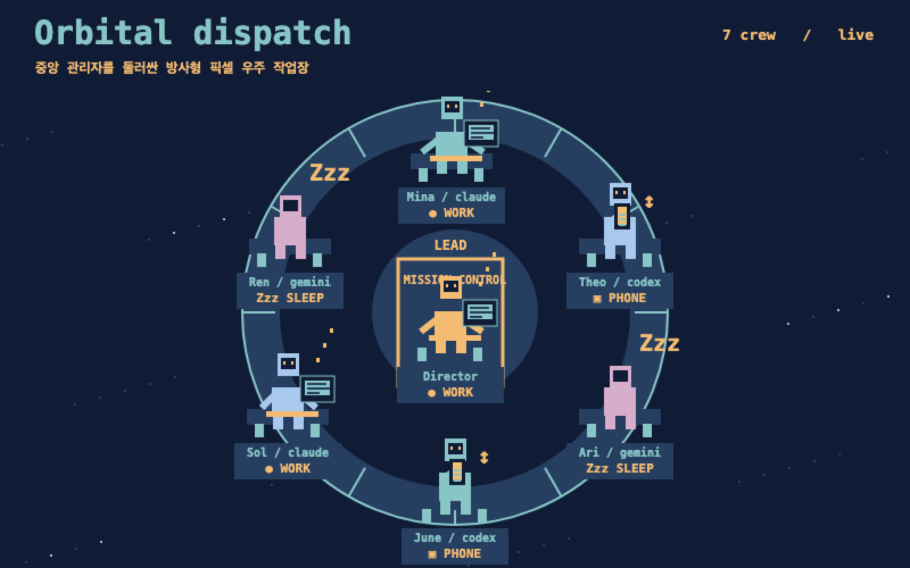
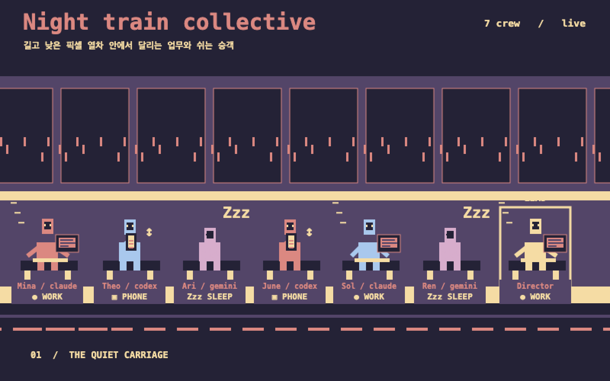
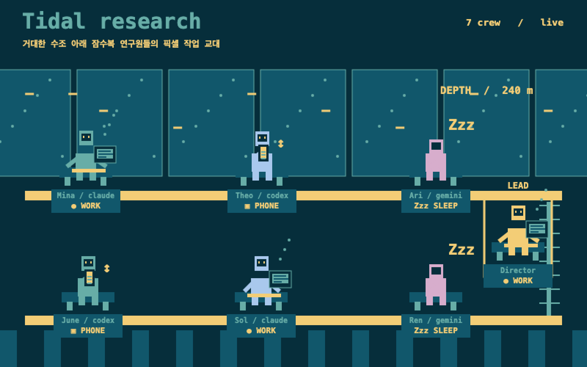
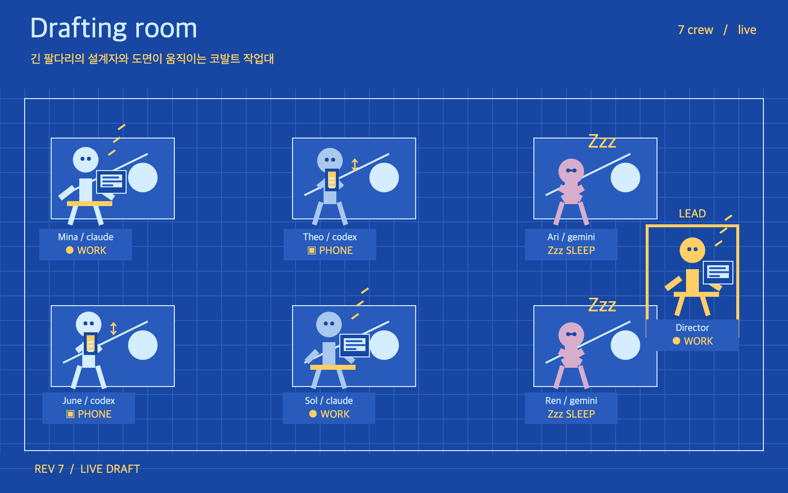
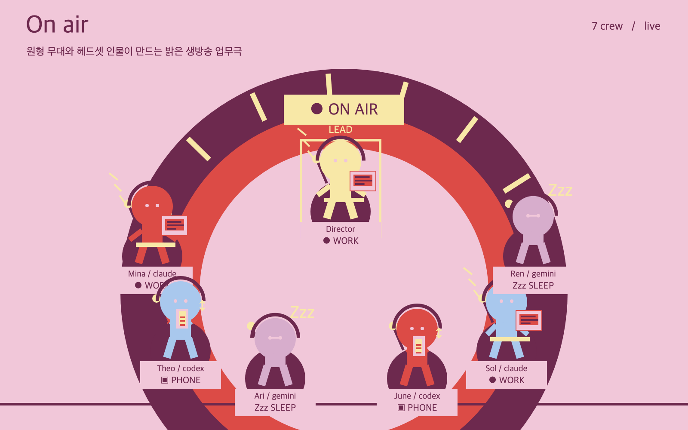
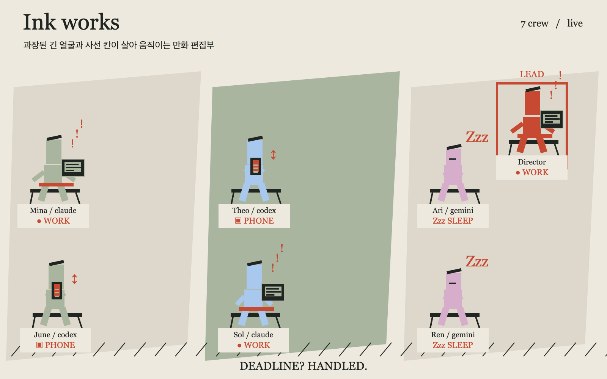
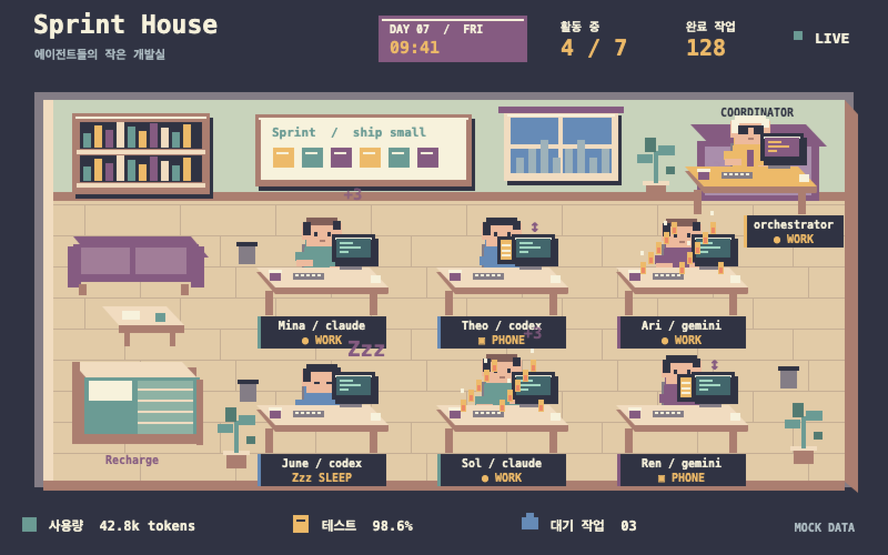

궤도 관제 링
중앙 관리자를 둘러싼 방사형 픽셀 우주 작업장
심야 업무 열차
길고 낮은 픽셀 열차 안에서 달리는 업무와 쉬는 승객
해저 연구 데크
거대한 수조 아래 잠수복 연구원들의 픽셀 작업 교대
살아 있는 청사진
긴 팔다리의 설계자와 도면이 움직이는 코발트 작업대
온에어 스튜디오
원형 무대와 헤드셋 인물이 만드는 밝은 생방송 업무극
잉크 편집실
과장된 긴 얼굴과 사선 칸이 살아 움직이는 만화 편집부